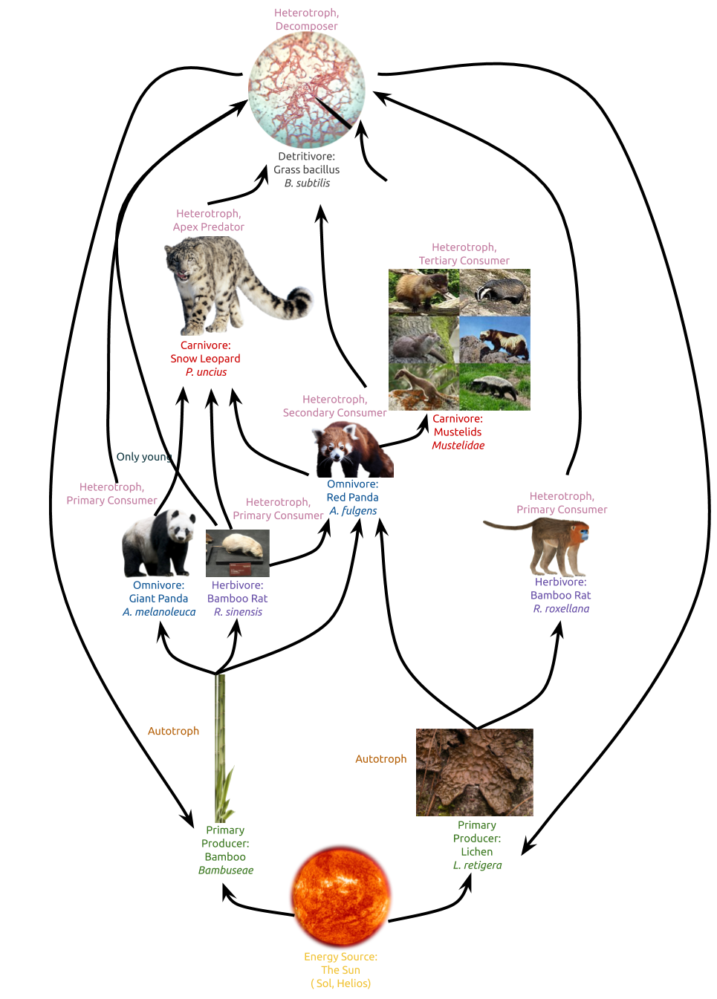

Giant Pandas | Population
This page is dedicated to teaching others about giant panda bears and their population.
Links to pages
Introduction to Food Web & Population
Food Webs are an important diagram to help people understand how energy moves through an ecosystem. Food webs have a fairly simple, (though not linear) movement of energy and matter through an ecosystem. The radiation produced by a star (our sun) is used by plants, the primary producers, to make carbohydrates (like glucose), lipids, as well as many other molecules. Primary consumers, like herbivores and omnivores (pandas, at least for the sake of this project, are going to be considered omnivores). These primary consumers get things like lipids and carbohydrates, as well as protein and other molecules, from their foods, and they use these to fuel their body and their body will deconstruct these molecules into basic atoms. Their body can store these atoms in many different ways and even use them to build cells and tissue. Secondary consumers, like some carnivores and omnivores, will eat primary consumers, getting more proteins and lipids than carbohydrates. Like the priamry consumer, their body will break down these parts or store them for energy, and the cycle continues forward. Eventually, after a few more groups of consumers (tertiary, quartiary, etc.) we reach the apex predator, who could possibly be considered on multiple different levels, because apex predators generally have a large variety of prey. They, like all consumers before them, will use the energy and matter from their prey/food as energy or to build their body. Since the apex predator doesn't have anything above it, it has to die through other means for the cycle to continue. Whether it dies in a battle or from natural causes, or any number of things, it doesn't matter. What matters is that small fungi and bacteria (and sometimes larger animals like vultures) will swarm onto the dead body and eat up its parts. These decomposers then recycle the parts of the apex predator back into the soil that the primary producers draw materials from, continuing the cycle back to the beginning. Now that you know how a food web works, I'm going to show you one I made for the Giant panda's ecosystem and explain parts of it.
Food Web Image
How Would an Increase/Decrease in Plant Population Affect Other Species?
Seeing as there are many different animals on earth that rely on a myriad of different things to survive, there are a lot of scenarios we can come up with that involve them and the things they consume. One such scenario would be an increase in plant life, specifically the plants that are listed in my food web. If both bamboo species and lichen species in China were to experience a rapid increase in population, it would mean that the primary consumers, the animals directly above them, would also experience population growth. Because there is more food for them to consume, they’re able to breed more and have more young that can continue to eat these foods. If only bamboo were to experience growth while lichen species stayed the same or declined, this would mostly affect the red panda and golden snub-nosed monkey. Since lichen makes up a decent portion of both of their diets, they would need to turn to other plants. Thankfully, both of these species aren’t as reliant on an individual kind of plant and would be able to adapt to eating different plants. The red panda would move to prioritizing bamboo even more, although it already makes up over 50% of its diet. Golden snub-nosed monkeys, on the other hand, would become more reliant on other kinds of trees and the products they produce. For example, they are known to eat the petiole (leaf stem) of evergreen trees, which would mean they might become more reliant on this and develop more methods to take off the needle-like leaves from the petiole. Seeing as they already eat many things that come from trees, this wouldn’t be too problematic, but it would lead to some level of migration from the monkeys. On the other hand, if the lichen species were to thrive whereas the bamboo species died off or began to stagger, bamboo rats would likely die off. They aren’t able to eat many things which would almost certainly lead to either endangerment or extinction, especially since in some places they’re already used for food. Red pandas, the everyman that they are, would be able to survive this too, still being able to live off of other plants or even small animals, although the bamboo rat dying off would remove a part of their diet. Giant pandas, the distant relative of the red panda, is also an omnivore. This means that it would be able to survive, but not without change. Although many sources disagree on the exact number, more than 75% of their diet is made up of bamboo. Seeing as they’re also able to consume animal matter and digest it, they’re considered omnivores. However, the bamboo that they’re known to eat doesn’t fuel them very much. This means that going from something that provides them with very little energy to something that gives them a lot would increase their ability to move around, which would in turn increase the number of animals they can eat. This would also require them to use their energy more efficiently, since they’re no longer a primary consumer. Animals eating other animals (carnivores and omnivores) are unable to live without high levels of energy efficiency, which would mean that the giant panda and any future evolutionary descendants would be turned into an animal that has much higher energy efficiency, as well as relying much more on meat. This would turn them from the lovable and slow creature they’re known as to a hungry and scary monster. I haven’t yet talked about the carnivores, however. In a scenario like either of these, the snow leopard would still thrive. Why? Because in the first scenario, lichens die while bamboo thrive, and this would lead to an increase in some populations, and the decrease in monkey population wouldn’t affect them as they don’t eat or rely on golden snub-nosed monkeys. And since they’re a predator of the red panda, which I’ve already outlined as equipped to handle both scenarios, they would do just fine still feeding on them. Mustelids are in a similar situation, although they could be affected more by some other animals I haven’t talked about. The final scenario that I need to cover is related to the decline of both plants. In this situation, it would turn out similarly to the last two. Red pandas and giant pandas would become reliant on animals, bamboo rats and golden snub-nosed monkeys would die out, and snow leopards and mustelids wouldn’t experience too many problems.
How Would an Increase/Decrease in Panda Population Affect Other Species?
If the giant pandas were to experience a large population uptick, without their primary food source also increasing in population, there wouldn’t be too much of a panic, but it depends on how large the uptick is. Since pandas were for some times an endangered species, it would probably take a lot of them to cause any problems. A problem that would be felt regardless though, is a lower amount of bamboo for other species to enjoy. Red pandas and bamboo rats would become more reliant on other food sources. However, since bamboo rats are so reliant on bamboo, it would probably lead to the endangerment or extinction of them. This would cause ripple effects and lead to snow leopards relying on red and giant pandas more. Since snow leopards only eat young giant pandas though, this would probably lead to them developing some sort of adaptation so that they can eat more than just young giant pandas. Because of this roundabout, the giant pandas would get preyed on more and thus have a lower population, possibly lower than they are right now. Snow leopards would be able to gain energy from a new facet, and due to the panda’s greater mass would probably have to hunt less, since they already are required by nature to have a high level of energy conservation. But, due to the increase in human interference, there would be more conservation efforts for the giant panda. This would likely even out and overall lead to a larger number of pandas worldwide. If they were to become ubiquitous, however, their population wouldn’t end up in that same situation. Although some of the story would be the same, like bamboo rats dying out and snow leopards evolving to be able to consume older pandas, because of how widespread they would become, it would wreak havoc on other populations, not just bamboo rats. Even though red pandas are able to eat a variety of things, if giant pandas were to have a large population increase, they would start to have their diets overlap with red pandas, and possibly even move to eating red pandas and other small animals, just so that they don’t die out. On the other hand, if pandas were to experience a slight decrease in the population, conservation efforts would ramp up and lead to another wave of panda conservation and awareness, similar to what has happened in the past. If they were to die out on a much larger scale, seeing as they’re currently a vulnerable species, they would likely end up extinct in the wild and rely completely on captive pandas to bring the species back from the brink of extinction. Since pandas are not a primary prey of some animals that could be considered their predators, such as snow leopards, there wouldn’t be a very large impact in the event of a decrease in population, however an increase in population would likely lead to the snow leopards adapting to be able to eat the giant panda, and not just their young.
What is the Current Incline/Decline of the Panda Population?
Currently, giant panda populations are on the incline, at around 1,900 pandas in the wild, although in the past they were on a decline, possibly having gotten as low as 1,000 as lower, so this scenario (population decline) can apply in some way. As I’ve discussed earlier, giant pandas are very similar to their distant relatives, the red panda. This means that red pandas could fill nearly any gap left by giant pandas if their population were to decline. While pandas are much larger, their energy efficiency would be about the same as red pandas, although they have much larger mass, which would mean that they consume more food. Because of this, red panda populations might experience an increase if giant panda populations were to stagger. Snow leopards, as I discussed earlier, would not be directly affected by this change as they don’t often resort to eating giant pandas. Bamboo rats, on the other hand, would be in a similar boat as the red panda. They are small but they are also widespread, unlike the red panda. This would mean that their population would also increase, but possibly by a lot more. This, in turn, would lead to snow leopards prioritizing bamboo rats as food, seeing as they’re very easy to get to, being widespread. Though they don’t have as much mass, they’re not too much less efficient than red pandas or giant pandas at energy conservation. And since snow leopards are the apex predator in this scenario, the only thing that is going to be getting any sort of nutrients, matter, or energy from them is a decomposer, which aren’t in dire need of any sort of energy. This means that even if snow leopards did even remotely rely on giant pandas, this change would greatly improve their livelihoods, being that they now have an even more ubiquitous and possibly more efficient food source.